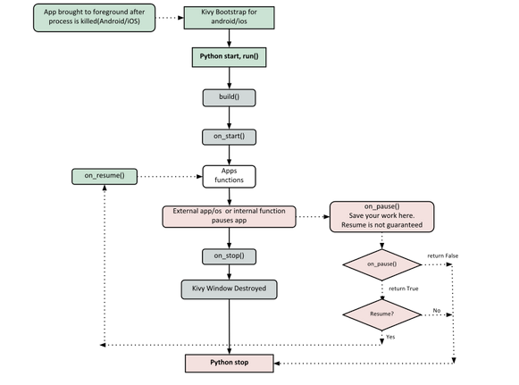

KIVY
DESARROLLO DE APLICACIONES PARA ANDROID CON PYTHON
¿ QUÉ ES KIVY ?
- Es una librería escrita en python para desarrollo de aplicaciones multiplataforma.
- Desarrollado utilizando Python y Cython.
- Se basa en OpenGL ES 2.
¿PORQUÉ KIVY?
- Soporte de Multitouch.
- Uso de API OpenGL.
- Empaquetación ANDROID/IOS
- Multiplataforma
- Licencia MIT
¿INSTALACIÓN DE KIVY?
Dependiendo del sistema Operativo que usemos se indicara diversas formas de instalar Kivy
# Windows
python -m pip install --upgrade pip wheel setuptools
#Install Kivy with Dependencies
python -m pip install docutils pygments pypiwin32
python -m pip install kivy.deps.sdl2 kivy.deps.glew
python -m pip install kivy.deps.gstreamer
python -m pip install kivy
Ubuntu y Derivados
Python2 - python-kivy:
$ sudo apt-get install python-kivy
Python3 - python3-kivy:
$ sudo apt-get install python3-kivy
MAC
- Abra el navegador Https://kivy.org/downloads/.
- Descargue Kivy - * - osx-python * .dmg.
- Abre el dmg y espere que se descomprima.
- Copie el Kivy.app a / Aplicaciones.
COMPONENTES BÁSICOS DE KIVY
- LABELS
- WIDGETS
- BUTTONS
- LAYOUTS
LABELS
Son uno de los tipos básicos de widgets que renderizan texto en la pantalla. El texto puede ser cadenas ASCII o cadenas Unicode
BUTTONS
Subclase de etiquetas que activan alguna acción cuando se presiona o suelta el botón.
Las etiquetas y los botones utilizan las mismas propiedades de configuración.
LAYOUTS
Se usan para organizar los widgets ,ejemplos de ello son los diseños de cuadrícula o los diseños de caja.
WIDGETS
Es un elemento de la interfaz de usuario que proporciona algún tipo de funcionalidad.
ARQUITECTURA DE KIVY
A continuación detallaremos como está compuesta la aplicación creada en Kivy
- Core Providers
- Graphics
- Core
- UIX
- Modules
- Events

CORE PROVIDERS
Los proveedores de Servicio en Kivy son 2: Proveedores Principales y Proveedores de Entrada
Las etiquetas y los botones utilizan las mismas propiedades de configuración.
GRAFICOS
Kivy emite comandos de dibujo acelerados por hardware utilizando la GPU del celular mediante OpenGL.La API de gráficos que te permite dibujar cosas simples por ejemplo: Circulos, Rectángulo.
CORE
Proporciona código para realizar tareas comunes
- Reloj:Programar eventos similar a un cron
- Cache:Si necesitas almacenar en caché algo que usas a menudo
- Detección de gestos Puede utilizar para detectar varios tipos de trazos
UIX
Diseños de uso común que puede reutilizar para crear rápidamente una interfaz de usuario
MODULES
Similares a los plugins de los navegadores brinda funcionalidades extra para ciertas tareas
EVENTS
Kivy abstrae diferentes tipos de entradas y fuentes como toques, ratones, TUIO o similares. Lo que todos estos tipos de entrada tienen en común es que puede asociar una posición 2D en pantalla con cualquier evento de entrada individual.
TIPOS DE EVENTO
- Los tres estados en los que puede estar un contacto son:
- Abajo:Un toque se produce una sola vez, en el mismo momento en que aparece por primera vez.
- Mover:n contacto puede estar en este estado por un tiempo potencialmente ilimitado. Un toque no tiene que estar en este estado durante su vida. Un'Movimiento' ocurre cada vez que la posición 2D de un toque cambia.
- Arriba:Un toque sube a lo sumo una vez, o nunca. En la práctica, casi siempre recibirás un evento ascendente porque nadie va a mantener un dedo en la pantalla
CICLO DE VIDA DE LA APLICACIÓN
A continuación detallaremos el ciclo de vida de una aplicación creada en Kivy 
EXPLICACIÓN
#Importamos Componentes de Kivy
import os
os.environ['KIVY_GL_BACKEND'] = 'sdl2'
from kivy.app import App
from kivy.uix.label import Label
#Definimos la clase
class MyApp(App):
#Funcion
def build(self):
return Label(text='Hello World')
if __name__ in ('__android__', '__main__'):
#Corremos nuestra aplicacion
MyApp().run()
KVLANG
Kivi también brinda un conjunto de comandos propios con su respectiva sintaxis que pueden ser usados al desarrollar ,se guardan en archivo con la extensión kv
MyWidget:
canvas:
Color:
rgba: 1, .3, .8, .5
Line:
points: zip(self.data.x, self.data.y)
BUILDOZER
Buildozer es un paquete escrito en Python que permite empaquetar la aplicación escrita con Kivy y generar el apk.
#Instalación de Buildozer
pip install buildozer
buildozer android init
USO DE BUILDOZER
.
#Apk para depuración
buildozer android debug
#Apk para release
buildozer android release